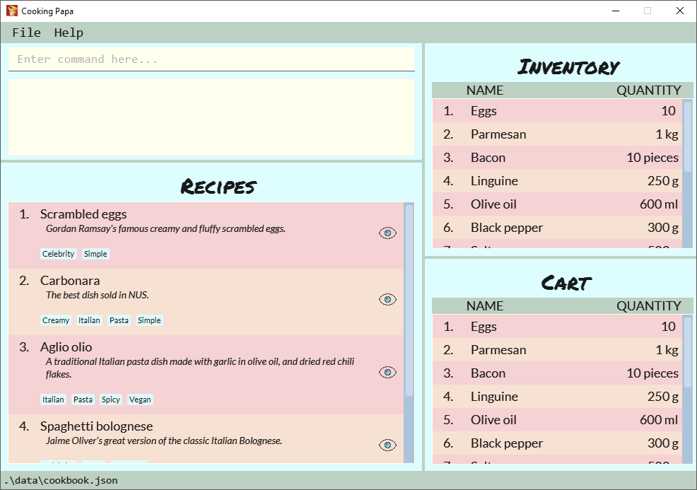
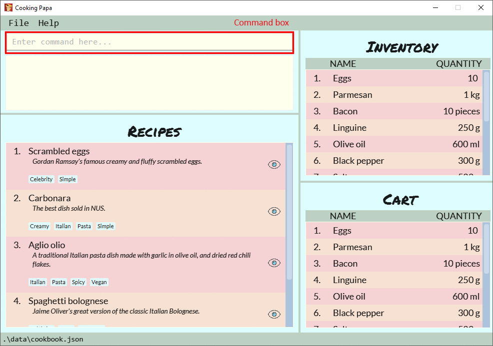

By: Team F11-4 Since: Jun 2016 Licence: MIT
1. Introduction
CookingPapa is an all-in-one application that acts as a personalised cookbook with your own favourite recipes! CookingPapa is an easy-to-use application that serves to help university students who live alone, to experiment and try out new recipes so that they will not always have to eat the same kind of food every day. With CookingPapa, users can easily edit recipes, keep track of ingredients they have at home and have a shopping list that can help them remember the ingredients they have to buy.
CookingPapa consists of 3 main features:
-
Cookbook: Stores all your recipes, including the ingredients and steps for each recipe.
Cookbook commands can be seen here: Section 3.1, “Cookbook Commands”
Cookbook is supplemented with recipe commands, which can be seen here: Section 3.2, “Recipe Commands” -
Inventory: Stores all the stock of ingredients you currently have.
Inventory commands can be seen here: Section 3.3, “Inventory Commands” -
Cart: Acts as a shopping list for ingredients you are missing for a recipe.
Cart commands can be seen here: Section 3.4, “Cart Commands”
Say goodbye to thick and disorganised cookbooks and start using CookingPapa today!
2. Quick Start and use of application
-
Ensure you have Java
11or above installed in your Computer. -
Download the latest
cookingpapa.jarhere. -
Copy the file to the folder you want to use as the home folder for your Cooking Papa.
-
Double-click the file to start the app. The GUI should appear in a few seconds.
Figure 1. CookingPapa User Interface -
CookingPapa uses the command window for all of its commands. You can see a comprehensive view of all the commands given in Section 3, “Features”.
Figure 2. CookingPapa User Interface, marked with command window -
Whenever a command is entered, feedback will be given in the display window, depending on the type of command given by the user.
Figure 3. CookingPapa User Interface, marked with display window
3. Features
CookingPapa accepts the following command formats for its application. It is important to follow these guidelines for smooth usage of the application.
Command Format
-
Words in
UPPER_CASEare the parameters to be supplied by the user.
(e.g. ininventory add ingredient i/INGREDIENT,INGREDIENTis a parameter which can be used asinventory add ingredient i/Bacon). -
Items in square brackets are optional.
(e.gcookbook add recipe n/NAME d/DESCRIPTION [t/TAG]can be used ascookbook add recipe n/Cheesecake d/Delicious New York cheesecake t/Dessertor ascookbook add recipe n/Cheesecake d/Delicious New York cheesecake). -
Items with
… after them can be used multiple times.
(e.g.cookbook add recipe n/NAME d/DESCRIPTION [i/INGREDIENT] [q/QUANTITY]…can be used to add multiple ingredients and its respective quantities in the same command such as `cookbook add recipe n/Sandwich d/Delicious Sandwich i/Bread q/2 pieces i/Ham q/3 slices i/Cheese q/2 slices). -
Parameters can be in any order.
(e.g. if the command specifiesn/NAME t/TAG i/INGREDIENT q/QUANTITY,q/QUANTITY t/TAG i/INGREDIENTis also acceptable).
3.1. Cookbook Commands
Cookbook commands are commands that allow users to add and remove recipes from the cookbook, as well as view recipes stored in the cookbook. More commands can be done with recipes and are covered in [Recipe commands].
3.1.1. View a recipe from the cookbook
This command allows you to view a recipe, the ingredients required, and the steps to cook it.
-
Format:
cookbook view recipe INDEX -
Example:
| Parameters | Result |
|---|---|
|
Views the details of recipe 1 in the following format: |
3.1.2. Add a new recipe to the cookbook
This command allows you to add and store a new recipe with the specified recipe name to the cookbook. If neither of the details is specified, an empty recipe will be added.
-
Format:
cookbook add recipe n/NAME d/DESCRIPTION [i/INGREDIENT] [q/QUANTITY] [x/STEP_INDEX] [s/STEP] [t/TAG] -
Examples:
| Parameters | Result |
|---|---|
|
Adds a new empty recipe to the cookbook with the following details: |
|
Adds a new recipe to the cookbook with the following details: |
3.1.3. Remove a recipe from the cookbook
This command allows you to remove a recipe of the specified index from the cookbook.
-
Format:
cookbook remove recipe INDEX -
Example:
| Parameters | Result |
|---|---|
|
Removes recipe 1 from the cookbook. |
3.1.4. Search recipes by keyword
This command allows you to search for recipes by a keyword. The search result will be returned along with the respective recipe indices.
-
Format:
cookbook search recipe k/KEYWORD -
Example:
| Parameters | Result |
|---|---|
|
Searches the cookbook for recipes with names matching the keyword 'Carbonara'. |
3.1.5. Search recipes by tag
This command allows you to search for recipes by tags, and the search result will be returned along with the respective recipe indices.
-
Format:
cookbook search recipe t/TAG… -
Examples:
| Parameters | Result |
|---|---|
|
Searches the cookbook for recipes with tags matching 'Easy'. |
|
Searches the cookbook for recipes with tags matching 'Pasta', 'Cream', and 'Easy'. |
3.1.6. Search recipes by ingredients owned
This command allows you to see what you can cook with your current inventory of ingredients.
-
Format:
cookbook search recipe inventory -
Example:
| Parameters | Result |
|---|---|
|
Searches the cookbook for recipes whose ingredients are available in the inventory. |
3.2. Recipe Commands
Recipe commands are commands that change a particular recipe, which you can indicate using the index of the recipe. Some things you can do are to add and remove ingredients from a recipe’s ingredient list. You can also write preparation steps for your recipes.
3.2.1. Add an ingredient to a recipe
This command allows you to add ingredients to a recipe.
-
Format:
recipe INDEX add ingredient i/INGREDIENT q/QUANTITY -
Examples:
| Parameters | Result |
|---|---|
|
Adds 2 eggs to the 1st recipe’s list of ingredients. |
|
Adds 200 ml of milk to the 2nd recipe’s list of ingredients. |
3.2.2. Remove an ingredient from a recipe
You can remove ingredients that spoil the taste of the dish using this command. If the quantity specified is of smaller value, the ingredient quantity will be subtracted and updated. Please ensure that the unit specified corresponds accordingly.
-
Format:
recipe INDEX remove ingredient i/INGREDIENT q/QUANTITY -
Examples:
| Parameters | Result |
|---|---|
|
Removes 1 egg from the list of ingredients in recipe 1. |
|
Removes 200 ml of milk from the list of ingredients in recipe 2. (If recipe 2 specifies 500 ml of milk, it will be subtracted and updated to 300 ml of milk.) |
3.2.3. Add a preparation step to a recipe
This command allows you to add a preparation step to the selected recipe. Requires a valid index in the list of recipes and the cooking step.
-
Format:
recipe INDEX add step x/STEP_INDEX s/STEP_DESCRIPTION -
Examples:
| Parameters | Result |
|---|---|
|
Adds a preparation step 2 (Bring water to boil) to recipe 1. |
3.2.4. Remove a preparation step from a recipe
This command allows you to remove a preparation step from the selected recipe. Requires a valid index in the list of recipes and the cooking step.
-
Format:
recipe INDEX remove step x/STEP_INDEX -
Example:
| Parameters | Result |
|---|---|
|
Removes preparation step 2 in recipe 1. |
3.2.5. Add a tag to a recipe
This command allows you to add a tag to the selected recipe. Requires a valid index in the list of recipes.
-
Format:
recipe INDEX add tag t/TAG -
Example:
| Parameters | Result |
|---|---|
|
Adds a tag (Pasta) to the recipe 1. |
3.2.6. Remove a tag from a recipe
This command allows you to remove a tag from the selected recipe. Requires a valid index in the list of recipes.
-
Format:
recipe INDEX remove tag t/TAG -
Example:
| Parameters | Result |
|---|---|
|
Removes the tag 'Beef' from the recipe 1. |
3.3. Inventory Commands
Inventory commands are commands that update the user’s very own inventory at home. These commands include adding, remove and viewing the current inventory database.
3.3.1. Add an ingredient to the inventory
This commands allows you to add ingredients to your inventory.
-
Format:
inventory add ingredient i/INGREDIENT q/QUANTITY -
Examples:
| Parameters | Result |
|---|---|
|
Adds 10 eggs into your inventory. |
|
Adds 200g of butter into your inventory. |
3.3.2. Remove an ingredient from the inventory
This command allows you to remove ingredients from your inventory. If the quantity specified is of a smaller value, the ingredient quantity will be subtracted and updated. Please ensure that the unit specified corresponds accordingly.
-
Format:
inventory remove ingredient i/INGREDIENT q/QUANTITY -
Examples:
| Parameters | Result |
|---|---|
|
Removes 10 eggs from your inventory. |
|
Removes 200g of butter from your inventory. (If your inventory had 500 g of milk, it will be subtracted and updated to 300 g of butter) |
3.4. Cart Commands
Cart commands are commands that allow you to easily add ingredients needed for a recipe into a shopping cart. This provides convenience for your grocery shopping needs.
3.4.1. Add ingredients in a recipe to the cart
This command allows you to add all the ingredients in a recipe to the cart.
-
Format:
cart add recipe INDEX -
Example:
| Parameters | Result |
|---|---|
|
Adds all the ingredients required of recipe 1 to the cart. |
3.4.2. Add ingredients to the cart
This command allows you to add ingredients to the cart.
-
Format:
cart add ingredient i/INGREDIENT q/QUANTITY -
Example:
| Parameters | Result |
|---|---|
|
Adds 5 eggs to the cart. |
3.4.3. Remove ingredients from the cart
This command allows you to remove ingredients from the cart. If the quantity specified is of a smaller value, the ingredient quantity will be subtracted and updated. Please ensure that the unit specified corresponds accordingly.
-
Format:
cart remove ingredient i/INGREDIENT q/QUANTITY -
Example:
| Parameters | Result |
|---|---|
|
Removes 1 egg from the cart |
|
Removes 200ml of milk from the cart. (If your cart had 500 ml of milk, it will be subtracted and updated to 300 ml of milk) |
3.4.4. Clear all the items in the cart
This command allows you to clear all the items in the cart. It can be used to discard an unwanted cart, or to clear the cart after completing the purchase.
-
Format:
cart clear ingredient -
Example:
| Parameters | Result |
|---|---|
|
Clears the cart of all items. |
3.5. Edit recipe details [v2.0]
The following commands allow you to edit the details of the recipes that are currently in the cookbook.
3.5.1. Edit an ingredient in a recipe
If you want to change the quantity of an ingredient after some experimentation, this command will help you achieve that.
-
Format:
recipe INDEX edit i/INGREDIENT q/QUANTITY -
Examples:
| Parameters | Result |
|---|---|
|
Changes the quantity of eggs to 3 in the 1st recipe’s list of ingredients. |
|
Changes the quantity of milk to 100 ml in the 2nd recipe’s list of ingredients. |
3.5.2. Edit a preparation step in a recipe
This command allows you to edit a preparation step from the selected recipe. Requires a valid index in the list of recipes and the cooking step
-
Format:
recipe INDEX edit step x/STEP_INDEX s/STEP_DESCRIPTION -
Example:
| Parameters | Result |
|---|---|
|
Changes preparation step 2 to 'Fry the eggs' in recipe 1 |
3.6. Calendar Commands [v2.0]
Calendar commands are commands that allow you to set date-related commands, such as reminders and recipe of the day
3.6.1. Add a recipe to cook on a certain day
Reminds the user to cook a certain recipe on a certain day
-
Format:
calendar set DD-MM-YYYY cook recipe INDEX -
Example:
| Parameters | Result |
|---|---|
|
Adds recipe 1 to your calendar to cook |
3.6.2. View recipes to cook on a certain day
User can view the recipes they were supposed to cook on a certain day. The date input can be replaced with 'today' for the current date.
-
Format:
calendar view recipes DD-MM-YYYY -
Example:
| Parameters | Result |
|---|---|
|
Shows the recipes scheduled to cook on 10th October 2010. |
|
Shows the recipes scheduled to cook on the current day of use. |
3.7. Recipe of the day generator [v2.0]
CookingPapa can generate a recipe of the day to cook based on the recipes currently in their cookbook.
-
Format:
generate recipe of the day -
Example:
| Parameters | Result |
|---|---|
|
Displays the recipe of the day |
4. FAQ
Q: How do I transfer my data to another Computer?
A: Install the app in the other computer and overwrite the empty data file it creates with the file that contains the data of your previous Address Book folder.
5. Command Summary
| Category | Addtional Parameters | Result |
|---|---|---|
cookbook |
view recipe INDEX |
Shows recipe at given INDEX |
add recipe n/NAME d/DESCRIPTION |
Adds a new empty recipe with the given NAME and DESCRIPTION. |
|
add recipe n/NAME d/DESCRIPTION [i/INGREDIENT] [q/QUANTITY] [x/STEP_INDEX] [s/STEP] [t/TAG] |
Adds a new recipe with the given NAME and DESCRIPTION. INGREDIENT and its QUANTITY, STEP and its STEP_INDEX, and TAG are optional parameters and will be added according to input from user. |
|
remove recipe INDEX |
Remove recipe at given INDEX |
|
search recipe k/KEYWORD |
Search for recipes by a keyword |
|
search recipe t/TAG |
Search for recipes by a keyword |
|
search recipe inventory |
Search for recipes whose ingredients are available in the inventory. |
|
recipe |
INDEX add ingredient i/INGREDIENT q/QUANTITY |
Add ingredients to a recipe at given INDEX |
INDEX remove ingredient i/INGREDIENT q/QUANTITY |
Removes the ingredient and the specified quantity from recipe at given INDEX |
|
INDEX add step x/STEP_INDEX s/STEP_DESCRIPTION |
Adds a step at STEP_INDEX with STEP_DESCRIPTION to the recipe at given INDEX |
|
INDEX remove step x/STEP_INDEX |
Remove a step at STEP_INDEX from the recipe at given INDEX |
|
INDEX add tag t/TAG |
Adds a tag 'TAG' to the recipe at given INDEX |
|
INDEX remove tag t/TAG |
Removes a tag 'TAG' to the recipe at given INDEX |
|
inventory |
add ingredient i/INGREDIENT q/QUANTITY |
Adds QUANTITY of INGREDIENTS into your inventory. |
remove ingredient i/INGREDIENT q/QUANTITY |
Removes QUANTITY of INGREDIENTS from your inventory. |
|
cart |
add recipe INDEX |
Adds all ingredients required of recipe at given INDEX to the cart. |
add ingredient i/INGREDIENT q/QUANTITY |
Adds QUANTITY of INGREDIENTS into your cart. |
|
remove ingredient i/INGREDIENT q/QUANTITY |
Removes QUANTITY of INGREDIENTS from your cart. |
|
clear ingredient |
Clears the cart of all ingredients. |